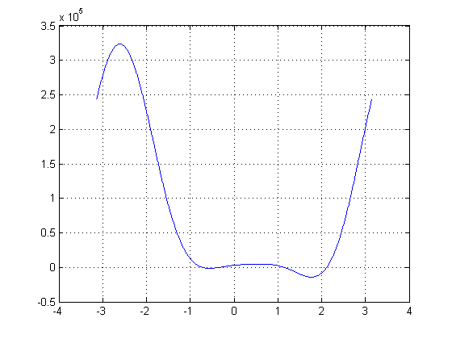
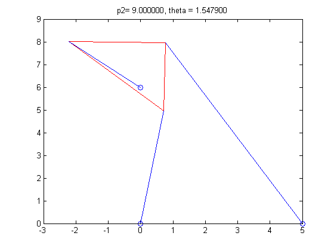

Rotating Stewart Platform. Digital image. Wikipedia. N.p., n.d. Web. 04 Feb. 2014.
http://upload.wikimedia.org/wikipedia/commons/a/a7/Hexapod_general_Anim.gif.
As seen above, the Stewart Platform consists of six struts of variable length. These struts can rotate to support various payloads. These payloads include applications in flight simulation, carnival rides, and surgical procedures. In our setting, the Stewart Platform was simplified to a 2-Dimensional version. In this 2-Dimensional setting, the platform is rotated about an angle, theta, and is support by three struts, of variable lengths. In this project we had to solve for valid poses of the platform, given various initial conditions.
L1=2, L2=L3=sqrt(2), gamma=pi/2, p1=p2=p3=sqrt(5)
Using a bisecting method, solutions are found and they are close to -pi/4 and pi/4.
theta=0.785397529602051, -0.785397529602051
x1=5, (x2, y2) = (0,6), L1=L3=3, L2 = 3*sqrt(2), gamma=pi/4, p1=p2=5, p3=3
x1=5, (x2, y2) = (0,6), L1=L3=3, L2 = 3*sqrt(2), gamma=pi/4, p1=5, p2=7, p3=3
Six poses:
Roots graph:
p2=4
theta = 1.3316, 1.7775

p2=8
theta = 1.3316, 1.7775
p2=9
theta = 1.3316, 1.7775
This project was a very enjoyable collaboration. Our individual abilities complemented each other very well. Much of the time, the problems were solved collectively, with plenty of discussion between the two of us. The first moving graph was coded by Wonjun himself. The other moving graph was brainstormed by the two of us, and was coded by Wonjun as well. This was agreed upon by the two of us, as I (James), was responsible for typing the Project summary and verifying that the norms were correct in Problem 4.
Sauer, T. Numerical Analysis 2nd ed. Pearson